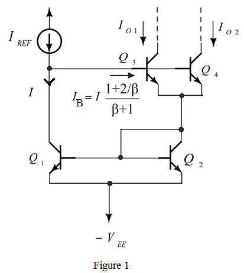

Calculate the current  .
.
Calculate the current .
Refer to Figure P7.71 in the text book.
Redraw the circuit diagram as shown in Figure 1.

From Figure 1, the reference current is,
Calculate the current .
Calculate the current .
Calculate the value of .

 .
.
(b)
The 0.7 mA reference current can be used to generate three output currents of
0.1 mA, 0.2 mA and 0.44 mA, by using three transistors in parallel having relative area ratios of 1, 2, 4.
When , Calculate the current .
Therefore, the actual value of is .
So, the current is .
When , Calculate the current  .
.
Therefore, the actual value of , is  .
.
Find the current,  .
.

Therefore, the actual value of  is .
is .